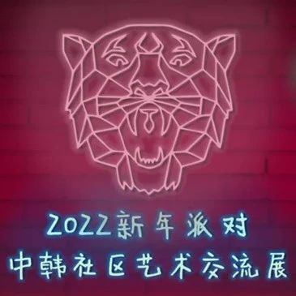

友谊长存，2022新年派对&中韩社区艺术交流展圆满落幕
作者: SeeDAO
超过 2300 人次参与本次活动，展览馆凭借流量登上 Cryptovoxels 热门地块的日榜单。

1月25日晚，在各位参展者和访客留下大合影的那一刻，筹划了近一个月的 2022 新年派对&中韩社区艺术交流展在 Cryptovoxels 上圆满落幕。
当天有超过 2300 人次参与到 2022 新年派对&中韩社区艺术交流展，活动还得到了 Cryptovoxels 官方支持并在推特上转发活动预告。
加密艺术家 EH21 在烤仔建工新春展馆 ConFi's Lucku Bag 展出的 NFT 《Bitby_HODL》也在本次活动中成功售出。
超过 126 位数字艺术家带来的数字艺术作品将呈现在大众眼前；中韩社区 6 个不同主题的建筑被用作本次中韩社区艺术交流展的展览馆，为参展者在元宇宙中带来全新的感官体验；数据显示，超过 2300 人次参与本次活动，展览馆凭借流量登上 Cryptovoxels 热门地块的日榜单。参与报名的前 100名 参展者均获得了专属的 Wearable 空投奖励，同时每个场馆中还都藏有新年惊喜红包，找到所有红包的小伙伴即可获得由活动主办方准备的元宇宙新春大礼包。ShanghaiDao城隍庙
https://www.cryptovoxels.com/parcels/5132
https://www.cryptovoxels.com/play?coords=N@741W,69N,0.5U
KOREAN NFT
https://www.cryptovoxels.com/play?coords=N@6712W,75N,0.5U
https://www.cryptovoxels.com/play?coords=N@725E,728S
MetaCat Firenze
https://www.cryptovoxels.com/play?coords=W@864E,11S,5.5U
MetaEstate龙宫
https://www.cryptovoxels.com/play?coords=W@6484W,72N
SeeDAO，是一个由 CryptoC 发起的、致力于打造创作者经济的去中心化自治组织（DAO）。使命是将 Web2.0 的创作者引入 Web3.0 世界，帮助内容创作者和内容消费者探索更好的生产关系和组织关系。“风潮”是著名NFT社区 CryptoC 孵化的加密艺术工作室，旨在打通艺术家与加密行业的桥梁，帮助艺术家利用区块链等前沿技术更好表达创作理念，同时能够体验商业化价值。ShanghaiDAO，一个在各个元宇宙空间之上集合建立的虚拟城市，目标是在元宇宙中建设新上海。Shanghai DAO 对元宇宙的探索不仅是在建筑方面，也包括虚拟城市生活观念与实践、元宇宙商业、加密艺术等。元気星空 METACHI 是国内最早开展数字藏品发行业务的专业机构，定位于全球化数字藏品甄选、经纪与服务平台，为优质数字藏品作品提供全球化发行、推广服务。KoreanNFT 是一个韩国 NFT 创作者的聚集地，在这里你可以了解到有关韩国 NFT 社区的一切!Metaestate 是全球性的元宇宙建筑服务商。元筑科技专注于提供元宇宙建筑服务，致力于丰富元宇宙内容建设，为中外元宇宙提供合理规划用地、搭建优秀建筑、引入知名IP、开发使用场景、开展市场活动等专业服务。MetaCat 专注于元宇宙数据分析、内容导航、土地租赁等业务，致力于为大众提供最完备的元宇宙数据分析服务和最好用的内容导航服务。烤仔建工是国内一流的元宇宙专业建筑设计及施工团队。源自顶尖的公有链团队 Conflux，烤仔建工团队主要由资深区块链行业从业者、游戏策划及建筑师组成，致力于元宇宙新建筑美学的发展探索，专注于元宇宙应用场景的开发，努力为创新品牌与传统行业的“元宇宙化”架设桥梁，力图打破元宇宙与现实世界“最后的屏障”。淘派是基于 Conflux 树图区块链公有链系统的淘派是国内领先的数字藏品发行、推广及交易平台。用户可通过微信支付、银行卡付款、分期付款等熟悉的支付形式，在淘派平台内购买入驻艺术家或电影、动漫、游戏等知名 IP 发行的加密数字藏品。MetaFocus 定位元宇宙内容传播平台，比肩元宇宙世界的分众传媒，率先抢跑虚拟经济赛道，突破数字营销的想象力。团队拥有多年市场营销经验，可为客户提供元宇宙活动策划、广告投放、视频制作、AMA 等专业服务。WELCOMETO OUR DISCORD
https://discord.gg/seedao